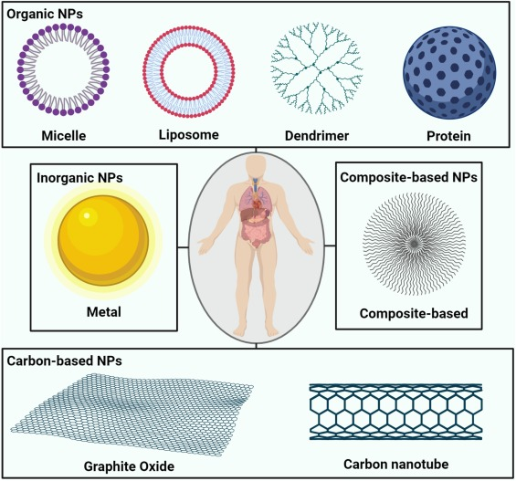
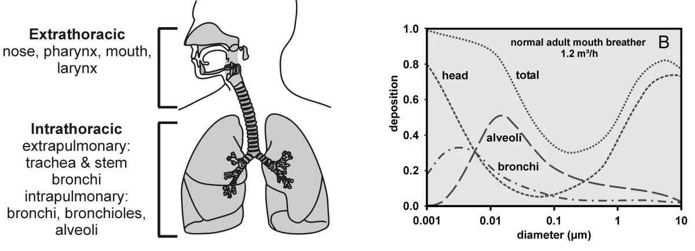

Work in progress document.
Why are nanoparticles used in medicine?
Nanoparticles used for medicinal purposes are referred to as nanomedicines and these agents have multi-dimensional usage as diagnostic tools or vehicles used for the targeted delivery of selected therapeutic compounds(Sadeghi et al. 2020). Nanoparticles are defined as being between 1-100 nanometres (nm) in diameter and these particles have already been used in the delivery of drugs such as vaccines, nucleotides and recombinant proteins(Sadeghi et al. 2020). These nanoparticle dependent delivery strategies exhibit improvements in rate of absorption, reduction in elimination kinetics and controlled release(Sadeghi et al. 2020).
Traditional drug administration normally involves the oral and intravenous delivery of drug molecules. These drug particles travel in an unguided manner and this results in a systemic distribution throughout the body(Lu et al. 2021). It is instead desirable to have the drug molecules primarily be located at the desired site of action as this systemic distribution results in low drug efficacy and enhances the potential for off target effects(Lu et al. 2021).
An important consideration within pharmacological treatments is how to best maintain the concentration of the drug at the site of action. The optimal concentration range is termed as the therapeutic window and this window is a range in which the effectiveness of the drug is maintained without reaching toxic levels. The use of nanoparticle delivery systems allows for the pharmacokinetics and biodistribution of a drug to be dependent upon the characteristics of a given nanoparticle and not upon the drug molecule.
Nanoparticles have been constructed from various materials and the four major compositional categories are: organic, inorganic, carbon-based and composite-based(Jeevanandam et al. 2018). The material choice in addition to the size and shape of the nanoparticle are key in determining its biological outcomes(Jeevanandam et al. 2018). Additional considerations are the particles surface bioactivity and functionality.

Biodistribution of nanoparticles
Nanoparticles can be administered using various different routes, however the preeminent manner is intravenous administration currently. The route of administration plays a large role in determining the biodistribution of a nanoparticle and specific characteristics of the particle can be tuned in order to have further control over the specific site of deposition for a given particle. When nanoparticles are inhaled, there is significant accumulation in the lung tissue, however the diameter of the nanoparticle can critically determine the specific site the particles will accumulate. Figure 1 demonstrates that particles (0.001-0.01 \(\mu\)m) can be seen to accumulate significantly in the extra thoracic region whereas relatively larger particles begin to accumulate more significantly in the intrathoracic region(Geiser and Kreyling 2010).

| Route | Advantages | Disadvantages/Challenges for nanoparticles |
|---|---|---|
| Oral |
|
|
| Nasal |
|
|
| Pulmonary |
|
|
| Intravenous |
|
|
| Ocular |
|
|